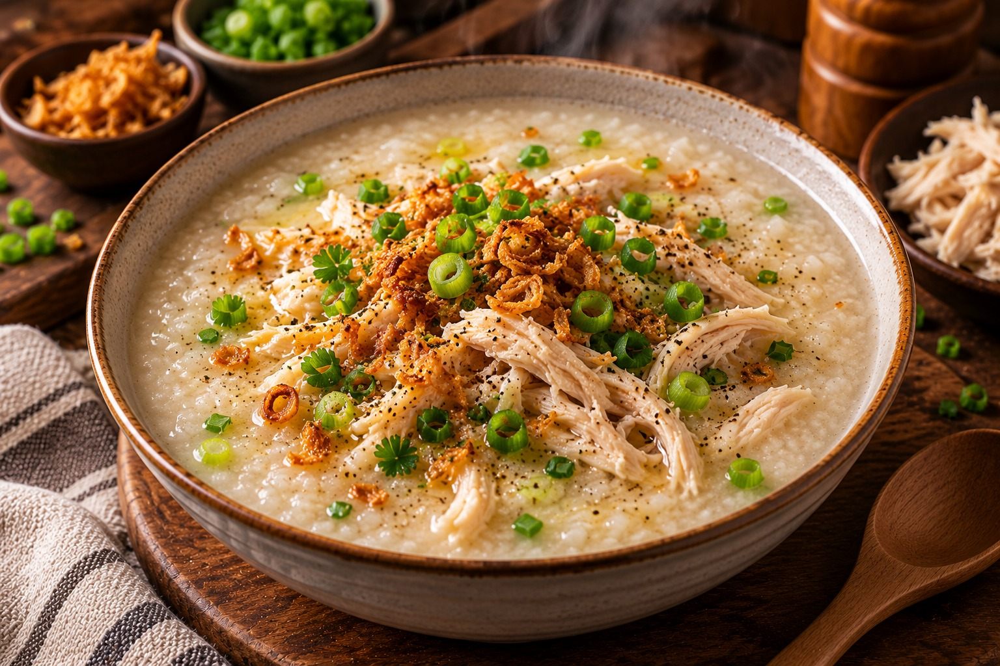

CONGEE SOUP🍲
Warm, gooey, and made to melt your heart.
⏱ 30 min
Prep Time
⏱ 12 min
Cook Time
Easy
Difficulty
☆ 4.9
128 reviews
Creamy Chicken Congee A warm and comforting rice porridge, slow-cooked until silky and creamy, topped with tender shredded chicken, fresh green onions, crispy shallots, and aromatic herbs. Simple, cozy, and full of flavor — the perfect bowl for any time of day. 🍲✨